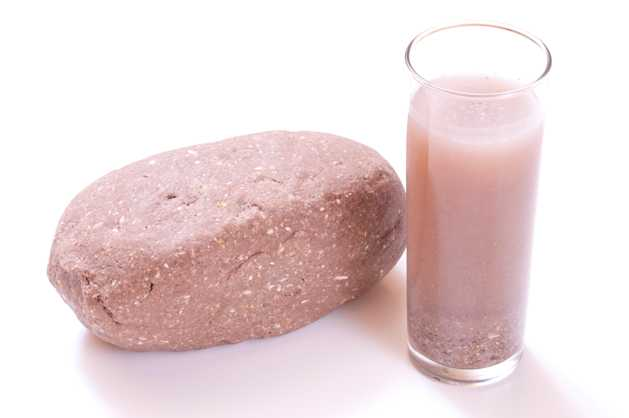

Descripcion
El pozol es una bebida tradicional del sureste de Mexico, muy consumida en Yucatan y otros estados cercanos. Se elabora principalmente con maiz y puede incluir cacao, lo que le da un sabor especial y diferente.
El pozol ha sido consumido desde la epoca prehispanica por la cultura maya.
Ingredientes
| Ingrediente | Cantidad |
|---|---|
| Masa de maiz | 2 tazas |
| Agua | 1 litro |
| Cacao (opcional) | Al gusto |
| Azucar | Al gusto |
| Hielo | Opcional |
Preparacion
- Disolver la masa de maiz en agua.
- Mezclar bien hasta que no queden grumos.
- Agregar cacao si se desea un sabor diferente.
- Endulzar con azucar al gusto.
- Revolver bien la mezcla.
- Servir fresca o con hielo.
Consejos
Se recomienda mezclar constantemente antes de beber, ya que la masa puede asentarse en el fondo.
El pozol puede prepararse natural o con cacao dependiendo del gusto.